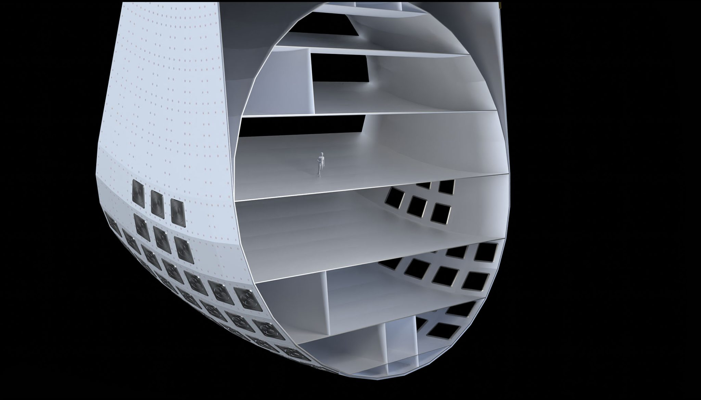

Our hotel ring continuously and gently rotates, this creates a very natural feeling, very similar to Earth’s gravity. You can walk, eat, and sleep normally with your feet firmly on the floor. The station is large and spins slowly, so most guests feel no dizziness or motion sickness at all. Guests who want to feel and experience zero-gravity will have the opportunity to do so in designated zero-gravity locations.